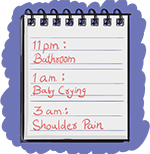

Module: Fatigue and Energy Conservation
Janet L. Poole, PhD, OTR/L, Cindy Mendelson, PhD, RN, Laura Dyas, LSW, LPC, MA, Mary Alore, MBA
Resources
Guided meditation exercise
A printable script that you can record and play to guide yourself through mediation.
Printout PDF20 tips for a good night’s sleep
Many people have trouble falling asleep or staying asleep, or both. Here are some tips for getting a good night’s sleep.
Printout PDF
- Establish a general routine – sleep and wake at the same time each day.
- Allow at least 8-9 hours (more if needed) of uninterrupted sleep at night.
- Avoid caffeinated beverages, alcohol, cigarettes, or stimulating activities in the evening.
- Avoid television and computer time close to bed time. Do not watch TV in bed; it encourages you to stay awake.
- Limit liquids in the evening.
- Nap during midday, but avoid late afternoon/early evening naps, which may interfere with nighttime sleep.
- Being active during the day can help you sleep better at night.
- Create a relaxing bedtime routine – get your brain and body ready to go to sleep.
- Taking a warm bath or shower can relax the body. Wearing warm socks can also be relaxing.
- Use ear plugs to decrease noise.
- Listen to relaxing music.
- Use guided imagery or meditation. See the “Guided meditation exercise” resource.
- Turn your clock around so you cannot see the time.
The National Sleep Foundation provides information on designing the bedroom for sleep and healthy sleep tips and, provides information on how make and use a Sleep Diary.
http://sleepfoundation.org/sleep-diary/SleepDiaryv6.pdf
See the resource sheet on “20 tips for a good night’s sleep“.
These are all good ideas, but I wake up frequently at night.
 The best plans for getting enough rest will not work if you cannot get a solid period of sleep at night. Common reasons for nighttime waking include children needing help, family members making noise, dogs barking, a need to use the bathroom, and pain. If you wake up frequently at night, a diary by the bedside can help you find out why.
The best plans for getting enough rest will not work if you cannot get a solid period of sleep at night. Common reasons for nighttime waking include children needing help, family members making noise, dogs barking, a need to use the bathroom, and pain. If you wake up frequently at night, a diary by the bedside can help you find out why.
Identify why you wake up at night
Keep a pad of paper and pencil at your bedside. Make a note of the time you go to bed. Every time you wake up, mark the time and the reason. Do not spend time writing at night. You can fill in the details in the morning.
For example, Jane is a married mother of three children. Her baby is 3 months old, and her oldest daughter is 14. Jane tries to get to bed by 10 pm and usually wakes with the baby and her husband around 6 am. She is going to evaluate her sleep situation from a problem-solving perspective.
This is a typical night for her:
- 11 pm – bathroom
- 1 am – baby crying
- 3 am – shoulder pain
Each time Jane wakes up she quickly jots down why she is awake, tends to the issue, and then tries to go back to sleep. In the morning, she completes the diary entries by marking what she did each time she woke up, and she estimatee, as well as she can, how long she was awake.
Her completed record looks like this

- 11 pm – bathroom – went to the bathroom, then got a drink of water and checked on baby. Up for about 15 minutes.
- 1 am – baby crying – got a bottle ready for the baby, changed her diaper, fed and rocked her until she fell asleep. Up for 30 minutes
- 3 am – shoulder pain – got up and took pain medication, watched TV until shoulder started to feel better. Up for 45 minutes.
- 6 am – up with family.
Evaluate nighttime activities
No wonder Jane is tired. She never slept for more than 2 hours at a time, and she was awake for a total of 1½ hours out of an 8-hour night.
Jane knows that you are experienced with scleroderma and seeks your advice. Your goal is to help her develop some strategies to reduce nighttime waking as much as possible and, additionally, to reduce the time that she is awake each time she gets up. By simply eliminating the 1-am waking, she gains an extra 30 minutes of sleep, in addition to 3 uninterrupted hours of sleep. Jane knows that the baby’s nighttime waking will decrease as she gets older. To avoid this 1-am waking, you come up with the following list of suggestions for her consideration:
- Can someone else in the house feed the baby at 1 am – her husband or older child?
- Can the baby sleep in your room until she sleeps through the night, so you can tend to her needs more quickly?
- Can you tend to the baby’s needs when you are already awake? For example, change diapers and provide a bottle when you wake at midnight, and then check on the baby again at 3 am?
Here are some other suggestions that you have thought about:
- Jane should drink enough in the evening to stay hydrated, but she should try to avoid drinking large amounts of fluids within 2 hours of bedtime. She should keep a glass of water by her bedside, so she can take a quick drink at night if she wakes up thirsty. If she just needs to go to the bathroom and does not, for example, also need to care for the baby, you suggest that she keep the area as dark as she safely can to support getting right back to sleep.
- You also think that Jane should evaluate her nighttime pain. You suggest that she consider things that might be contributing to the pain.
- Does her mattress provide appropriate support?
- Does she sleep in positions that increase her pain? Can she use pillows or splints during the night to support painful body parts in neutral positions to reduce nighttime pain?
- If she always has pain at night, you suggest that she consider taking her pain medication prior to going to sleep, instead of waiting until she awakens in pain. Of course, you remind her that any adjustments to her medication routines should be discussed with her physician first.